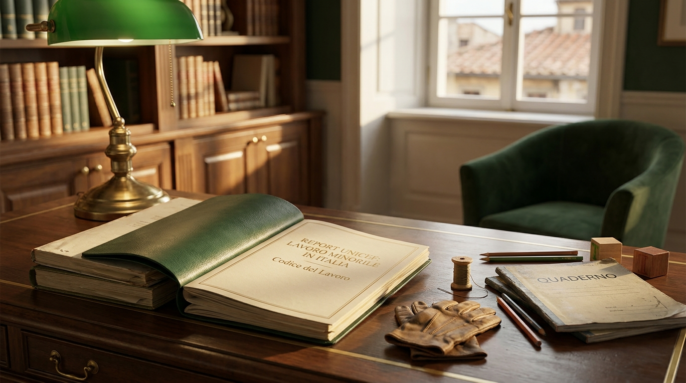

Lavoro minorile in Italia: cosa dice la legge dopo il Report UNICEF
Il quarto Report UNICEF Italia fotografa, sui dati 2020-2025, un aumento del lavoro minorile e degli infortuni che coinvolgono i più giovani. Un dato che richiama imprese e istituzioni agli obblighi di tutela. Ricostruiamo il quadro normativo italiano sull'età di ammissione al lavoro, sulla sicurezza dei minorenni e sui profili sanzionatori, amministrativi e penali.

Il dato di partenza
Il 4° Report UNICEF Italia, presentato in occasione della Giornata mondiale contro lo sfruttamento del lavoro minorile, analizza il quinquennio 2020-2025 incrociando fonti INPS, INAIL e ISTAT. Emergono due elementi: la crescita dell'occupazione minorile, anche in forme irregolari, e l'aumento degli infortuni che coinvolgono lavoratori entro i 19 anni.
Il riferimento internazionale è l'art. 32 della Convenzione ONU sui diritti dell'infanzia e dell'adolescenza, che riconosce al minore il diritto di essere protetto dallo sfruttamento economico e da ogni lavoro che possa comprometterne salute, sviluppo o istruzione. Su questa base si innesta la disciplina interna.
Inquadramento normativo
La fonte cardine resta la Legge 17 ottobre 1967, n. 977, successivamente modificata dal D.lgs. 345/1999 e dal D.lgs. 262/2000, che hanno recepito la direttiva 94/33/CE sulla protezione dei giovani sul lavoro.
L'art. 1 della L. 977/1967 distingue due figure. È bambino il minore che non ha ancora compiuto 15 anni o che è ancora soggetto all'obbligo scolastico. È adolescente il minore tra i 15 e i 18 anni che non è più soggetto all'obbligo scolastico.
L'età minima di ammissione al lavoro è fissata a 15 anni ed è in ogni caso subordinata all'assolvimento dell'obbligo di istruzione, di regola fino a 16 anni. I due piani non coincidono: l'età anagrafica minima è 15 anni, ma l'avvio dell'attività presuppone il completamento del percorso scolastico obbligatorio.
Sul versante della sicurezza, il D.lgs. 81/2008 individua all'art. 28, comma 1, i lavoratori minorenni tra i gruppi esposti a rischi particolari, di cui il datore deve tenere conto nella valutazione dei rischi. Gli artt. 36 e 37 impongono inoltre obblighi rafforzati di informazione e formazione, tanto più rilevanti per chi entra per la prima volta in un ambiente di lavoro.
Quando si entra nel penale
Le forme più gravi possono integrare l'art. 603-bis c.p. (intermediazione illecita e sfruttamento del lavoro). La fattispecie non si esaurisce nell'irregolarità formale: richiede l'approfittamento dello stato di bisogno del lavoratore e la presenza di indici di sfruttamento, quali la reiterata sproporzione tra retribuzione corrisposta e prestazione resa, le violazioni sistematiche in materia di orario, riposo e ferie, le condizioni di lavoro degradanti.
La distinzione è netta: l'inosservanza degli obblighi della L. 977/1967 configura, di regola, un illecito amministrativo o contravvenzionale; lo sfruttamento qualificato di un minore in stato di bisogno apre invece a una responsabilità penale autonoma.
Implicazioni pratiche per il datore di lavoro
Per l'impresa che impiega o intende impiegare minorenni gli adempimenti non sono formalità. L'art. 26 della L. 977/1967 prevede un apparato sanzionatorio specifico per la violazione delle norme su età, visite mediche, orario e lavorazioni vietate, con sanzioni che combinano profili amministrativi e penali.
A ciò si aggiunge l'esposizione in caso di infortunio. Oltre alla responsabilità civile per il danno e a quella penale per lesioni, il datore che abbia impiegato il minore in violazione delle norme di tutela è esposto all'azione di rivalsa dell'INAIL: l'Istituto, dopo aver indennizzato il lavoratore, può rivalersi sul datore per le somme erogate. Il risparmio iniziale derivante dall'irregolarità si traduce, nel caso peggiore, in un costo molto superiore.
Cosa fare in concreto
- Verifica l'età e l'assolvimento dell'obbligo scolastico prima dell'assunzione, acquisendo e conservando la documentazione anagrafica e formativa.
- Garantisci la visita medica preventiva e periodica prevista per il minore, presupposto di legittimità dell'impiego.
- Aggiorna il Documento di Valutazione dei Rischi considerando espressamente i lavoratori minorenni come gruppo a rischio, escludendo le lavorazioni vietate.
- Eroga informazione e formazione mirate secondo gli artt. 36 e 37 D.lgs. 81/2008, documentandone l'effettiva attuazione.
- Rispetta i limiti di orario, riposo e divieto di lavoro notturno stabiliti dalla L. 977/1967.
In presenza di rapporti di lavoro che coinvolgono minorenni, è opportuna una verifica preventiva di conformità delle procedure interne agli obblighi richiamati.
Disclaimer
Contributo informativo a cura di Tamburro & Partners - Avv. Giuseppe Tamburro. Non costituisce parere legale.
Ogni storia di lavoro ha i suoi tempi.
Se gestisci HR e vuoi un confronto su contenzioso, ispezioni o licenziamenti, scrivi allo studio. Ti rispondiamo entro un giorno lavorativo.